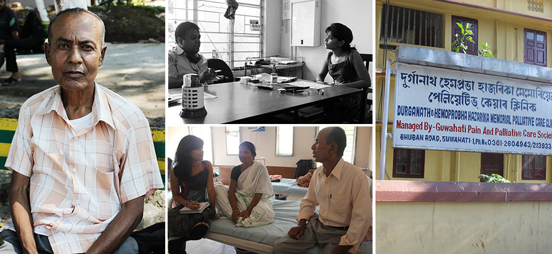
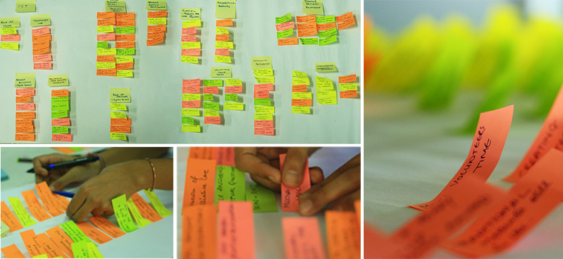
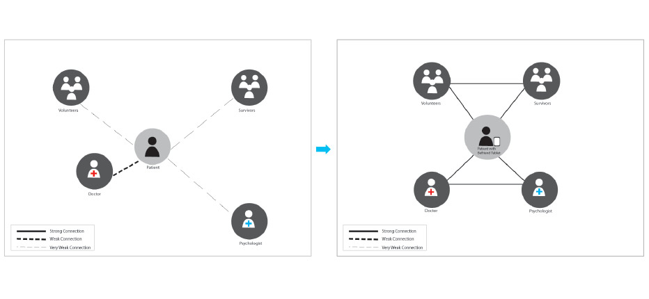
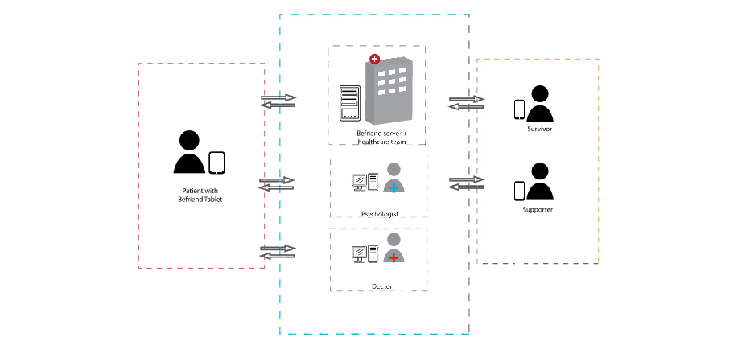
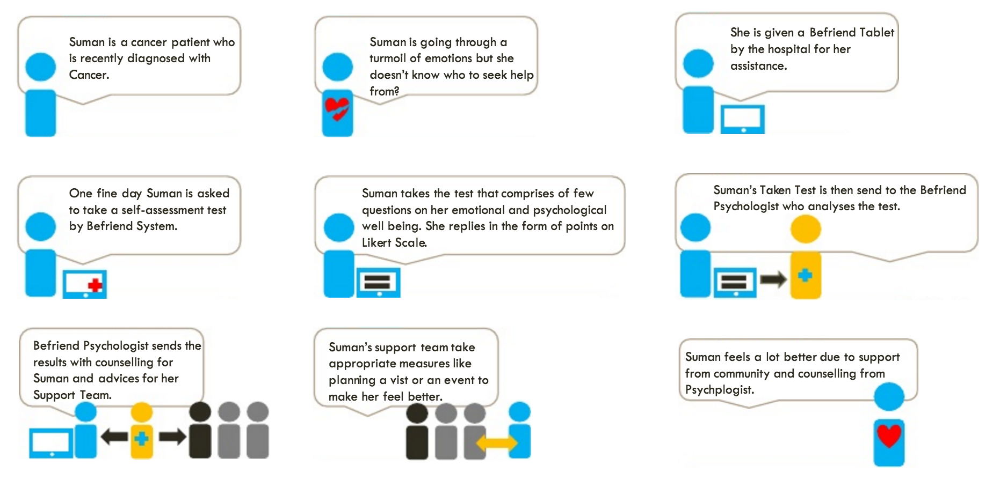
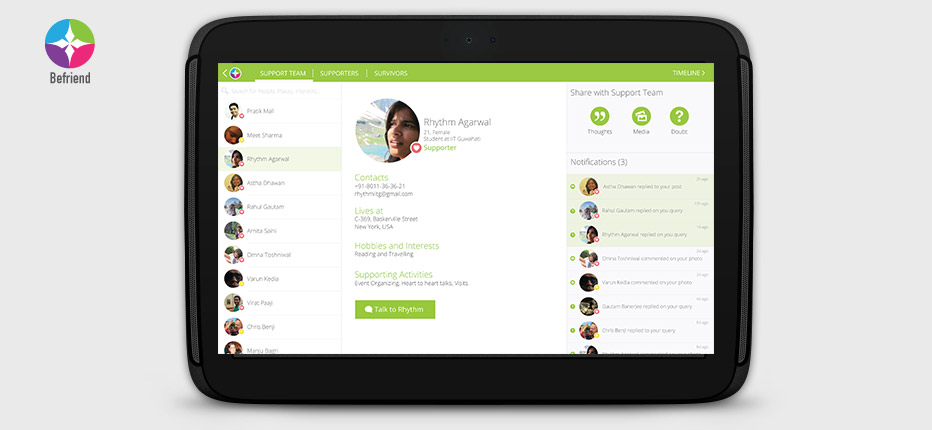
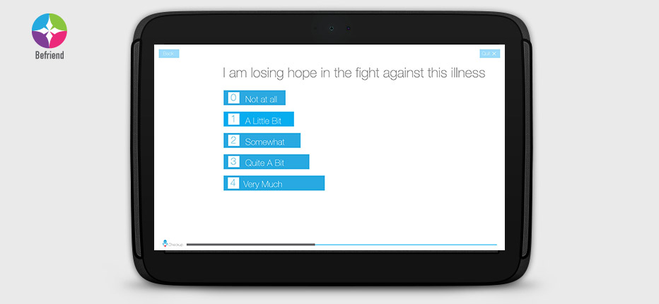
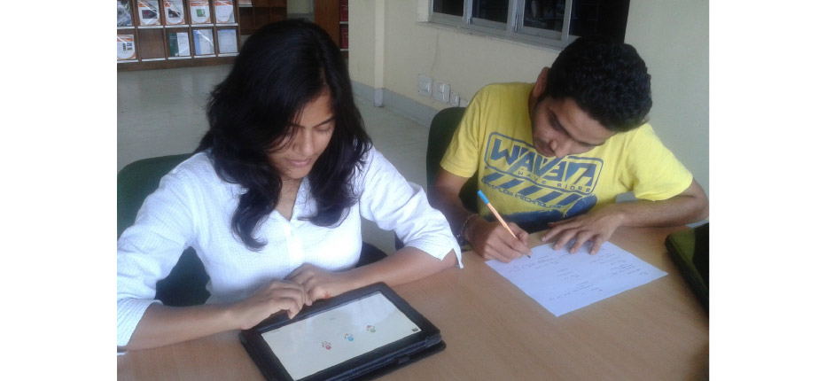

Befriend - Bachelor Thesis Project
Design Intervention in the Field of Palliative Care for Cancer Patients.
The Goal
The number of cancer cases in a year in India is huge and are increasing.
Palliative care or end of life care in India is in a relatively early stage
of development and consequently faces numerous problems.
There is ample scope and need of development in this area.
Goal of this project was to design an Information and Communication
Technology based solution providing efficient delivery of palliative care.
Solution
Befriend is a framework for a system which focuses on the efficient delivery of Palliative Care to cancer patients right from the diagnosis of Cancer by use of Information and Communication Technology. Facilitating a holistic approach to treatment through palliative care, giving special emphasis to the psychological, social and spiritual needs of the suffering.
System Design Process
Contextual Inquiry
Contextual Interviews, one of the qualitative research methods, are optimal for collecting data on individuals’ personal histories, perspectives, and experiences. Considering cancer to be a sensitive topic and to understand it from the perspectives of the local population it involves we adopted this method to take our research forward.

Data Analysis and Insights
The interviews were then closely analyzed based on a
shared understanding. The data was then consolidated using Affinity Diagram.
The affinity helped us summarize the insights, make them manageable,
presentable and facilitates discussion leading to newer insights.

Identifying gaps and Proposing framework
There seemed to be a visible lack of communication gap in the system.
There was a need for the patient to communicate better with all involved in the
treatment especially family, doctors and psychologists was not being
fulfilled. We saw a vision to facilitate better communication and community participation.

Defining system stakeholders
The system consists of patients(primary users),
along with befriend team which includes supporters and survivors network,
our doctors, researchers and psychologists who work as counsellors.
This whole system has three aspects to cover - the social aspect,
the well-being aspect(physical and psychological) and the awareness aspect of the patient.

Use Case Scenarios

High Fidelity Prototype
The prototype was built to have specific features
working for testing. It was built using Axure and it
was made working on a Asus 10’ android tablet.


Usability Testing
An application fails due to a number of
reasons relating to accessibility, purpose, usability and appearance,
the foremost being usability. Therefore, it is as necessary to take the
application through usability testing as it is to develop it. Testing
involved 5 participants who self-defined themselves as Cancer patients.
Testing was task based i.e. there was a sequence of specified tasks
given to the participants to be performed by them without any help
from the observers (besides indirect prompts at times).
